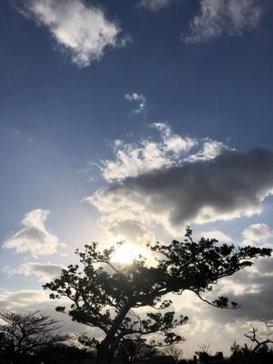
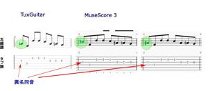

うるがいの話 ある日
最新: 異名同音【うるがいの話 ある日】とは 一日だけのプログです
『うるがいの話』の最新一日だけのプログで、通信料が少なく経済的だ。カニの画像をクリックすると全ての日付が載る『うるがいの話』サイトを表示します
|
|
【うるがいの話】 うるがい(ｳﾙｶﾞｲ urugai)とは、『もずくがに』の名前でとても大きくなります。 |
|---|---|
|
|
【カミマヤーの話】 猫のことを方言でマヤーといいます。カミマヤー（kamimayaa）とは、神の猫のことです。 |
|
【タナガーの話】 たながー（ﾀﾅｶﾞｰtanagaa）とは手長えびのことで、何種類かあり大きいのは車 エビぐらいになります。 |

|
【ぶながぁの話】 ぶながー(bunagaa)とは、赤い髪の毛、赤い身体、そして身長は１ｍ２０ｃｍ ぐらい、川の蟹を食べているの目撃された。場所は沖縄県国頭郡大宜味村のと ある村僕の隣近所に住んでいる爺さんから、聞いた話です。 |
|
|
【ギーマの話】 ギーマ(giima)とは、山原の里山に咲くスズランに似た、 花を付けます。実は食べられます、 気が付くと口の周りが紫になっています。 |
2022年02月01日 (火）異名同音
15:44

異名同音（いめいどうおん）とは、平均律において、音名は異なるが、実際の
音が同じ音となる複数（一組だけ２つ、他は３つ）の音のことをいう。
新しい楽譜ソフト（ＭｕｓｅＳｃｏｒｅ）で楽譜を作成していると、いつも使
っているＴｕｘＧｕｉｔａｒと同じ音だが臨時記号（＃、ｂ）のつけ方が違う
！、まずいジャン（具体的にはソ# とシｂ）、楽譜を楽譜ソフトに登録すると
きに依然から気づいてはいたが。ネットで調べてみる、・・なるほどそういう
ことか、新しい楽譜ソフトを適当に操作していたら、ソ# とシｂどちらにも変
更できた。あとで、異名同音という単語でＭｕｓｅＳｃｏｒｅ操作方法を調べ
てみると簡単な操作で任意に変更できた。おお、さすがいま活発に開発してい
るソフトだ。工工四の要望対応、進捗９割くらいかな。

おとといガソリンを入れなかったら、とうとう燃料警告灯が点灯した。始めの
経験である。多分、百キロは走行出来るはずと思いながらも、少しヒヤヒヤし
ながら走らせ無事給油する。満タン２２．１リッター、￥３、６２４円だった
ネットで確認した
ミライースってガソリンのメーターが点滅してからどれくらい走れるんですか
ミライースの取扱説明書には、燃料残量が2WD車は約６L以下になると、燃料
計の一番下の目盛りと燃料残量警告灯が点滅して、さらに燃料が少なくなると
点滅が早くなると書いてあると思います。
点滅が始まるのが残り６Lですので、平均燃費20Km/Lとしても120kmくらい
は走れます。
１５時３８分 ビットコインの総資産 ￥１２、７６９↑